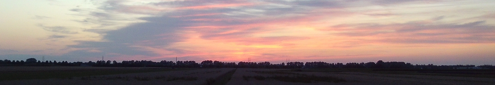

Over mij
Info
Ik ben Nathan en ik studeer werktuigbouwkunde aan de TU Delft. Ik hou van alles wat ook maar een beetje techniek bevat, en vindt het leuk om te leren hoe dingen werken. Dit is terug te zien in mijn hobbies en werk; Ik hou van lezen, werk graag met de 3D-printer en ben altijd aan het kijken hoe dingen in elkaar zitten. Verder sleutel ik als vrijwilliger aan een Noorduyn Norseman vliegtuig en ben ik beeldtechnicus in de kerk.
Enkele feitjes over Nathan Feith:
- Geboortejaar: 2006 ⟡
- Land: Nederland ⚐
- Religie: Christelijk ✞
- Studie: Werktuigbouwkunde 🛠
- Lengte: 1.90m ↕

Ik gebruik sinds 2020 geen smartphone meer en ben de trotse eignaar van een Nokia.
Hobbies
Ik heb vele intresses, maar dit zijn de dingen die ik het liefst doe in mijn vrije tijd:
- Lezen
- Dingen ontwerpen en bouwen
- Nieuwe dingen leren
- 3D printen
- Wandelen
- Fietsen
Af en toe game ik ook nog wel eens. Games die ik dan speel zijn:
- Open TTD of Transport Tycoon
- Microsoft Flight Simulator
- Euro Truck Simulator 2
- Open RCT2 of Rollercoaster Tycoon
- Minecraft
- Vroeger ook Lego Worlds

Sterke en zwakke punten
Zelfreflectie is belangrijk. Door de jaren heen heb ik mezelf steeds beter mogen leren kennen, en op basis van die kennis is hieronder een lijstje te vinden met sterke en zwakke punten. Ongetwijfeld zouden er in beide categoriën nog veel meer punten toegevoegd kunnen worden.
| Sterke punten | Zwakke punten |
|---|---|
| Ik ben heel zelfverzekerd | Ik ben heel eigenwijs |
| Ik ben serieus | Ik ben soms ongevoellig |
| Ik ben trouw | Ik laat dingen niet snel los |
| Ik stel hoge eisen aan mijzelf | Ik ben niet snel tevreden |
| Ik kan uitstekend zelfstandig werken | Ik ben minder goed in samenwerken |